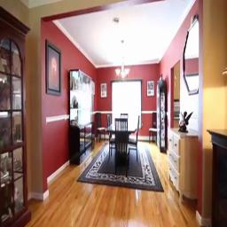
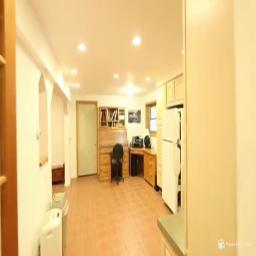
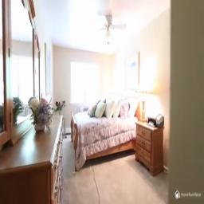
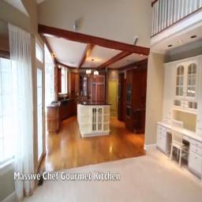
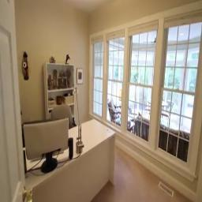

We propose to perform self-supervised disentanglement of depth and camera pose from large-scale videos. We introduce an Autoencoder-based method to reconstruct the input video frames for training, without using any ground-truth annotations of depth and camera. The model encoders estimate the monocular depth and the camera pose. The decoder then constructs a Multiplane NeRF representation based on the depth encoder feature, and renders the input frames with the estimated camera. The learning is supervised by the reconstruction error, based on the assumption that the scene structure does not change in short periods of time in videos. Once the model is learned, it can be applied to multiple applications including depth estimation, camera pose estimation, and single image novel view synthesis. We show substantial improvements over previous self-supervised approaches on all tasks and even better results than counterparts trained with camera ground-truths in some applications.




